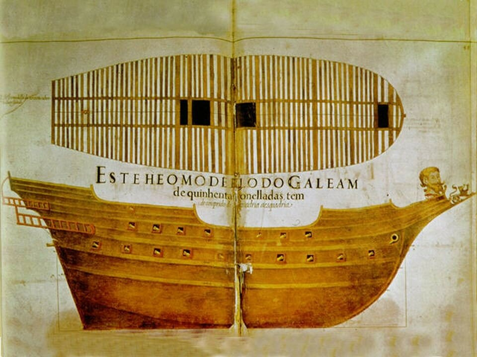
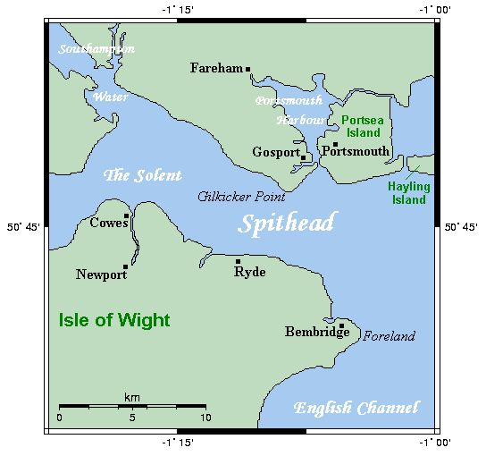
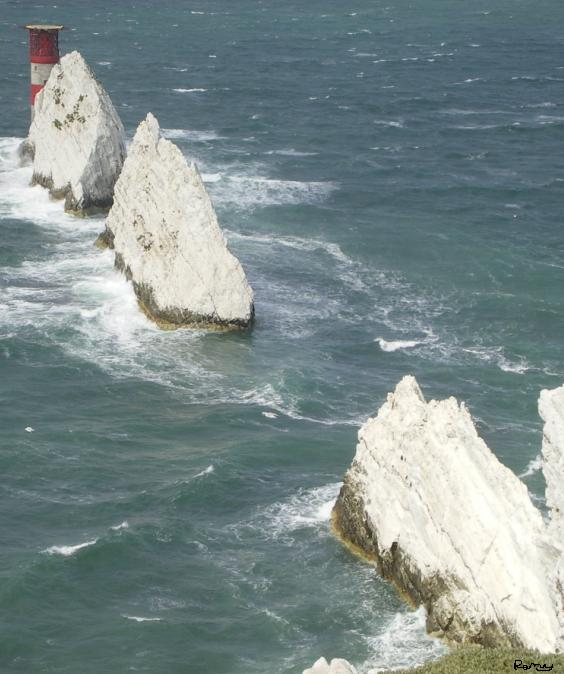
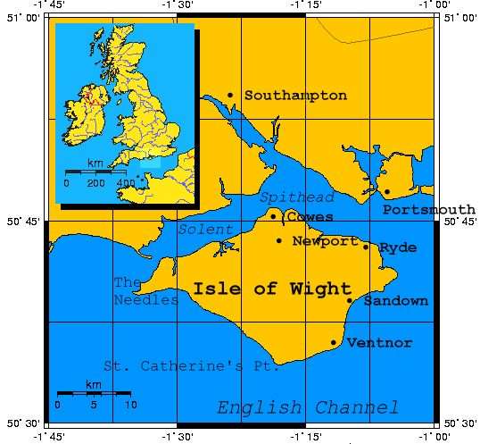

Дневник солдата: 3 августа
Дума за думой, волна за волной -
Два проявленья стихии одной.
В сердце ли тесном, в безбрежном ли море,
Здесь в заключении, там на просторе,
Тот же все вечный прибой и отбой,
Тот же все призрак тревожно-пустой.
Ф. И. Тютчев. Вешние воды.
Продолжим чтение Дневника солдата.
На рассвете среды 3 августа вице-флагман «Сан Хуан» (San Juan), находясь, как всегда, в арьергарде Армады, подвергся обстрелу противника; по галеону было выпущено более двухсот ядер; но ни один из вражеских кораблей не решался зайти в корму галеону, опасаясь получить то же самое, что они получили в предыдущий день. Они избегали появляться у наших бортов. Пока наша Армада лежала в дрейфе, ожидая галеон, около девяти утра вражеский флот удалился; и ничего больше не случилось в этот день.
Примечание 11. Рекальде в Дневнике с гордостью говорит о своем корабле. Он имел для этого все основания. В оценке кораблей испанского флота, проведенной а 1591 году, говорится «Лучшим артиллерийским кораблем Армады [в 1588 г.] был вице-флагман Непобедимой Армады (almiranta general) португальский галеон под названием San Juan [по-португальски он назывался São João de Portugal –g._g.], потому что его артиллерия и по типу, и по весу наилучшим образом подходила для службы на море.»
Известно, что при отправлении из Лиссабона Непобедимая Армада имела в своем составе девять португальских галеонов. Мы имеем о них лишь самое общее представление: грузоподъемность, число орудий, отрывочные сведения о численности экипажей и солдат на их борту. Хотя некоторые из этих кораблей проектировались и строились как нао (например, Сан Хуан упоминается в документах то как нао, то как галеон), фактически все они были по факту галеонами. Изображений конкретно Сан Хуана до нас не дошли, но наиболее авторитетные историки испанского и португальского флотов считают, что галеон этого типа изображен в рукописи М.Фернандеса, озаглавленной Livro de Traças de carpintería и датируемой 1616-м годом.

Изображение корпуса галеона грузоподъемностью 500 тонн из манускрипта Фернандеса
Более подробные данные о галеоне мы находим в рукописи из Лиссабонской национальной библиотеки, которая озаглавлена Livro Náutico. Из этого манускрипта мы узнаем, что португальские галеоны имели, скорее всего, двухколесные орудийные станки, как и станки на галеонах их соперников-англичан, то же количество орудийной прислуги, тот же темп стрельбы, что и у англичан.
Обычно историки пишут, что Сан Хуан имел 50 орудий. Но практически никто не сообщает, каким был тип этих орудий. Тут надо учитывать, что при формировании корабельного состава Армады существовал острый дефицит артиллерии. Это в равной мере относится и к португальской эскадре, в состав которой входил Сан Хуан. В дошедших до нас документах содержатся свидетельства о том, что для вооружения кораблей приходилось даже снимать пушки с крепостей Лиссабона и его окрестностей. Может быть следствием этого дефицита явилось такое разнообразие артиллерии на борту галеона дона Рекальде: девять различные типов орудий, которые стреляли железными ядрами и семь типов камнеметов. И это при том, что Сан Хуан считался лучшим артиллерийским кораблем эскадры и имел наиболее однородный состав корабельной артиллерии.
Примечание 12. Как обычно, бросим более широкий взгляд на события, описанные в Дневнике солдата.
Медина-Сидония, не получив ответа от герцога Пармы о готовности армии вторжения к погрузке на корабли Армады, вынужден был задуматься о поиске удобной якорной стоянки для своего флота. Наилучших вариантом был бы рейд Портсмута Спитхед или другое подходящее место в проливе Те-Солент, отделяющем остров Уайт от побережья Хэмпшира.

Якорная стоянка Спитхед
Здесь, имея хорошее укрытие от западных и юго-западных ветров, можно было бы спокойно дожидаться новостей от герцога Пармы. Кроме того, стоянка в Те-Соленте дала бы возможность, захватив плацдарм на северном побережье острова Уайт, пополнить запасы воды и провианта.
Рассвет 3 августа принес еще одну проблему для командующего Непобедимой Армадой. Флагманский корабль эскадры урок (хольков) 650-тонный El Gran Grifón потерял ход и отстал от общего строя Армады в районе ее фланга, обращенного к морю. Можно удивляться, но первым, кто обнаружил беспомощный испанский корабль, был, конечно, Дрейк. Подняв все паруса, чтобы использовать легкий юго-юго-западный ветер, английский Revenge поравнялся с беспомощным хольком и разрядил по нему все орудия одного борта, после чего развернулся и дал залп с другого борта. Не ограничившись этим, Дрейк вышел в корму испанскому кораблю и открыл продольный огонь из своих носовых орудий и мушкетов. Всего попало в цель около сорока ядер, уничтожив порядка шестидесяти испанских моряков на верхних палубах урки и ранив до семидесяти человек.
Однако в этом случае не повторилась трагедия Сан Сальвадора и Росарио. Бросившийся на помощь Грифону Рекальде на Сан Хуане, поддержанный флагманским Сан Мартином и галеасами де Монкада открыли ожесточенный огонь по кораблю Дрейка, который, потеряв рею грот-мачты, вынужден был ретироваться. Поврежденный El Gran Grifón был взят на буксир одним из галеасов и успешно уведен в глубь строя испанских кораблей.
К полудню легкий бриз вконец выдохся, и оба противостоящих флота медленно дрейфовали в восточном направлении к меловым скалам Нидлс (The Needles, «Иглы»)

у западного побережья острова Уайт

Английский лорд-адмирал Чарльз Говард, всерьез испугавшийся возможной оккупации острова Уайт или захвата испанцами одной из якорных стоянок в проливе Те-Солент, созвал очередной военный совет на своем Ark Royal для обсуждения способов противодействия этим планам противника. Было принято решение переформировать английский флот в четыре независимых эскадры по 25 кораблей в каждой под командой соответственно самого Говарда, Дрейка, Фробишера и Хокинса. Кроме того, каждая из этих четырех эскадр должна была выделить по шесть вооруженных купеческих судов для нападения на испанские корабли на песчаных отмелях в ночное время, чтобы не давать испанцам отдыха. Этот последний пункт плана был по какой-то причине отменен и ночь для обоих флотов прошла спокойно.
Продолжим в следующий раз.